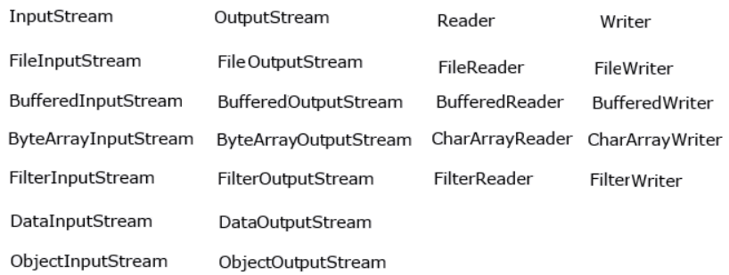

Fluxuri de intrare-ieșire.
O trăsătură distinctivă a multor limbaje de programare este
lucrul cu fișiere și fluxuri. În Java, funcționalitatea de bază pentru lucrul cu
fluxuri este concentrată în clasele din pachetul java.io.
Conceptul cheie aici este conceptul de flux. Deși conceptul de "flux" în programare este destul de suprasolicitat
și poate desemna multe concepte diferite. În acest caz, aplicabil lucrului cu fișiere
și intrare-ieșire, vom vorbi despre flux (stream) ca o abstracție care este utilizată
pentru citirea sau scrierea informațiilor (fișiere, socket-uri, textul din consolă
etc.).
Fluxul este legat de un dispozitiv fizic real prin sistemul de intrare-ieșire
Java. Putem avea definit un flux care este legat de un fișier și prin intermediul căruia
putem citi sau scrie în fișier. De asemenea, poate fi un flux legat de un socket de rețea,
prin intermediul căruia putem primi sau trimite date în rețea. Toate aceste sarcini: citirea
și scrierea diferitelor fișiere, schimbul de informații prin rețea,
intrarea-ieșirea în consolă, le vom rezolva în Java cu ajutorul fluxurilor.
Un obiect din care se pot citi date se numește flux
de intrare, iar un obiect în care se pot scrie date - flux de ieșire. De exemplu, dacă trebuie citit conținutul
unui fișier, se utilizează fluxul de intrare, iar dacă trebuie scris într-un
fișier - fluxul de ieșire.
La baza tuturor claselor care gestionează fluxuri de octeți se află
două clase abstracte: InputStream (reprezentând
fluxuri de intrare) și OutputStream (reprezentând
fluxuri de ieșire).
Dar, deoarece lucrul cu octeți nu este foarte comod, pentru lucrul cu fluxurile
de caractere au fost adăugate clase abstracte Reader (pentru citirea fluxurilor de caractere) și Writer (pentru scrierea fluxurilor de caractere).
Toate celelalte clase care lucrează cu fluxuri sunt moștenite din aceste
clase abstracte. Clasele principale ale fluxurilor:

Fluxuri de octeți.
Clasa InputStream
Clasa InputStream este baza pentru toate clasele care gestionează fluxurile de
octeți de intrare. Să analizăm metodele sale principale:
- int available(): returnează
numărul de octeți disponibili pentru citire în flux
- void close(): închide fluxul
- int read(): returnează o reprezentare
întreagă a următorului octet din flux. Când în flux nu mai sunt octeți
disponibili pentru citire, această metodă va returna numărul -1
- int read(byte[] buffer): citește
octeți din flux în tabloul buffer. După citire, returnează numărul de
octeți citiți. Dacă nu a fost citit niciun octet, se returnează numărul
-1
- int read(byte[] buffer, int offset, int length): citește un anumit număr de octeți, egal cu length, din flux în tabloul
buffer. Octeții citiți sunt plasați în tablou începând de la offset,
adică de la elementul buffer[offset]. Metoda
returnează numărul de octeți citiți cu succes.
- long skip(long number): sare peste un
număr de octeți egal cu number la citirea din flux
Clasa OutputStream
Clasa OutputStream este clasa de bază pentru toate clasele care lucrează cu
fluxuri binare de ieșire. Funcționalitatea sa este realizată prin următoarele
metode:
- void close(): închide fluxul
- void flush(): golește tamponul de
ieșire, scriind tot conținutul acestuia
- void write(int b): scrie în fluxul de
ieșire un octet, care este reprezentat prin parametrul întreg b
- void write(byte[] buffer): scrie în
fluxul de ieșire tabloul de octeți buffer
- void write(byte[] buffer, int offset, int length): scrie în fluxul de ieșire un număr de octeți egal cu length din
tabloul buffer, începând de la offset, adică de la elementul buffer[offset]
Clasele abstracte Reader și Writer.
Clasa abstractă Reader oferă funcționalitate pentru citirea
informațiilor textuale. Să analizăm metodele sale principale:
- abstract void close(): închide fluxul
de intrare
- int read(): returnează o reprezentare
întreagă a următorului caracter din flux. Dacă nu există astfel de caractere
și s-a ajuns la sfârșitul fișierului, se returnează numărul -1
- int read(char[] buffer): citește
în tabloul buffer caractere din flux, al căror număr este egal cu lungimea tabloului
buffer. Returnează numărul de caractere citite cu succes. La atingerea sfârșitului
fișierului, returnează -1
- int read(CharBuffer buffer): citește
caractere din flux în obiectul CharBuffer. Returnează numărul de caractere citite cu
succes. La atingerea sfârșitului fișierului, returnează -1
- abstract int read(char[] buffer, int offset, int count): citește în tabloul buffer,
începând de la offset, caractere din flux,
al căror număr este egal cu count
- long skip(long count): sare peste un
număr de caractere egal cu count. Returnează numărul de caractere sărite cu
succes
Clasa Writer definește funcționalitatea pentru toate fluxurile de caractere
de ieșire. Metodele sale principale:
- Writer append(char c): adaugă la
sfârșitul fluxului de ieșire caracterul c. Returnează obiectul Writer
- Writer append(CharSequence chars):
adaugă la sfârșitul fluxului de ieșire un set de caractere chars. Returnează
obiectul Writer
- abstract void close(): închide
fluxul
- abstract void flush(): golește
tampoanele fluxului
- void write(int c): scrie în flux un
caracter care are o reprezentare întreagă
- void write(char[] buffer): scrie în
flux tabloul de caractere
- abstract void write(char[] buffer, int off, int len): scrie în flux doar câteva caractere din tabloul buffer. Numărul de
caractere este egal cu len, iar selecția caracterelor din tablou începe de la indexul
off
- void write(String str): scrie în flux
un șir de caractere
- void write(String str, int off, int len):
scrie în flux un anumit număr de caractere dintr-un șir, egal cu len, iar selecția
caracterelor din șir începe de la indexul off
Funcționalitatea descrisă de clasele Reader și Writer este
moștenită direct de clasele fluxurilor de caractere, în special de clasele FileReader și FileWriter, destinate lucrului cu fișiere text.
Acum să analizăm clasele specifice ale fluxurilor.